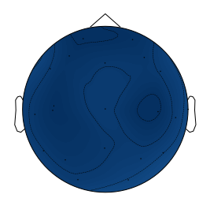

Reading a sample .set file
import mne
import mne_features
mcifile=mne.io.read_raw_eeglab("/aMCI/CAUH_298.set")
mcifile
<RawEEGLAB | CAUH_298.set, n_channels x n_times : 19 x 11990 (59.9 sec), ~1.8 MB, data loaded>
Load all EEG files
import os
from pathlib import Path
import mne as mne
allfolder="/all/"
allfiles = os.listdir(allfolder)
allfiles1=[]
for fi in allfiles:
fn=(os.path.join('/all/', fi))
f=mne.io.read_raw_eeglab(fn)
allfiles1.append(f)
What is the sampling frequency ?
print(allfiles1[0].info['sfreq'])
200.0 Hz
What are the EEG Channels?
fn=(os.path.join('/all/', allfiles[0]))
f=mne.io.read_raw_eeglab(fn)
columns=f.ch_names
print(columns)
['Fp1-AVG', 'F3-AVG', 'C3-AVG', 'P3-AVG', 'O1-AVG', 'Fp2-AVG', 'F4-AVG', 'C4-AVG', 'P4-AVG', 'O2-AVG', 'F7-AVG', 'T3-AVG', 'T5-AVG', 'F8-AVG', 'T4-AVG', 'T6-AVG', 'FZ-AVG', 'CZ-AVG', 'PZ-AVG']
What are the frequency bands we can analyse?
FREQ_BANDS = {"delta": [0.5, 4.5],"theta": [4.5, 8.5],"alpha": [8.5, 11.5],"sigma": [11.5, 15.5],
"beta": [15.5, 30], "all": [0.5,45]}
Compute bicoherence values over each channel for some n-channel eeg recording. Below we have used a package called pactools
import numpy as np
import matplotlib.pyplot as plt
from pactools import Comodulogram, REFERENCES
from pactools import simulate_pac
fs = 200.
high_fq = 12
low_fq = 8
low_fq_width = 1.0
n_points = 10000
noise_level = 0.4
signal=allfiles1[16].get_data()
low_fq_range = np.linspace(low_fq,high_fq, 10)
method='bispectrum'
mean_bispectrum_vals=np.zeros((19,))
import pandas as pd
locs=pd.read_csv("/10-20system.csv")
for ch in range(0,signal.shape[0]):
estimator = Comodulogram(fs=fs, low_fq_range=low_fq_range,low_fq_width=low_fq_width, method=method,progress_bar=False)
estimator.fit(signal[ch,:])
mean_bispectrum_vals[ch,]=np.mean(estimator.comod_)
The mean bicoherence values obtained using pactools package for each of the n EEG channels
mean_bispectrum_vals
array([-30.12183418, -29.76264187, -29.9897885 , -29.3527151 ,
-28.81369499, -29.81468632, -29.32162026, -30.09891781,
-28.57958522, -27.93335758, -29.08927445, -29.34038286,
-28.96037254, -28.88373867, -28.65277022, -28.04964427,
-29.11625337, -28.76752224, -29.10712627])
We have taken 19 eeg channels. Below are the 2d coordinates for these channels
eeg_locs_2d=np.empty((19,2))
eeg_locs_2d[0,:]=[-21.5,70.2]
eeg_locs_2d[1,:]=[-35.5,49.4]
eeg_locs_2d[2,:]=[-52.2,-16.4]
eeg_locs_2d[3,:]=[-39.5,-76.3]
eeg_locs_2d[4,:]=[-26.8,-100.2]
eeg_locs_2d[5,:]=[28.4,69.1]
eeg_locs_2d[6,:]=[40.2,47.6]
eeg_locs_2d[7,:]=[54.1,-18.0]
eeg_locs_2d[8,:]=[36.8,-74.9]
eeg_locs_2d[9,:]=[24.1,-100.5]
eeg_locs_2d[10,:]=[-54.8,33.9]
eeg_locs_2d[11,:]=[-70.2,-21.3]
eeg_locs_2d[12,:]=[-61.5,-65.3]
eeg_locs_2d[13,:]=[56.6,30.8]
eeg_locs_2d[14,:]=[71.9,-25.2]
eeg_locs_2d[15,:]=[59.3,-67.6]
eeg_locs_2d[16,:]=[0.6,40.9]
eeg_locs_2d[17,:]=[0.8,-14.7]
eeg_locs_2d[18,:]=[0.2,-62.1]
Plot the topomap
mne.viz.plot_topomap(mean_bispectrum_vals, eeg_locs_2d)
